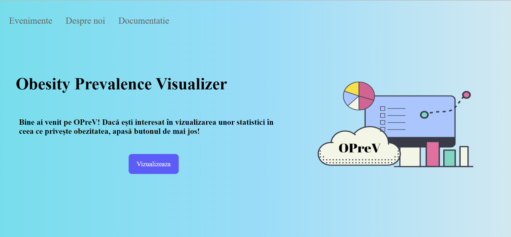
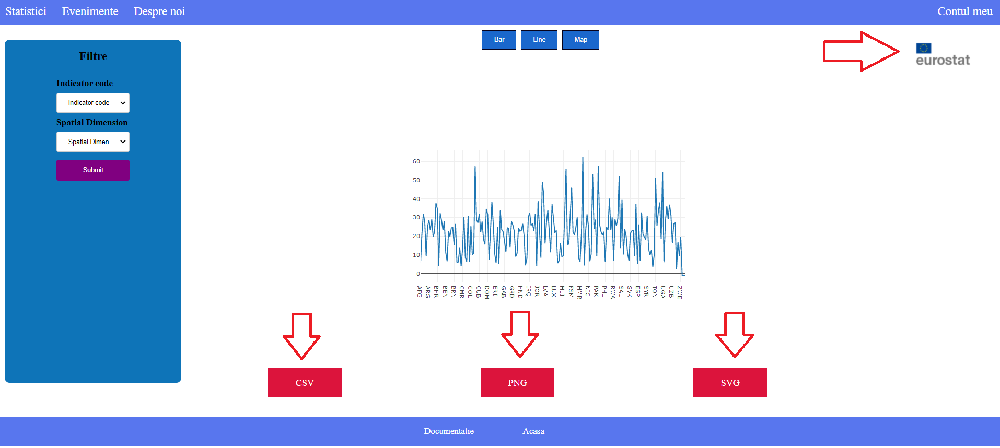
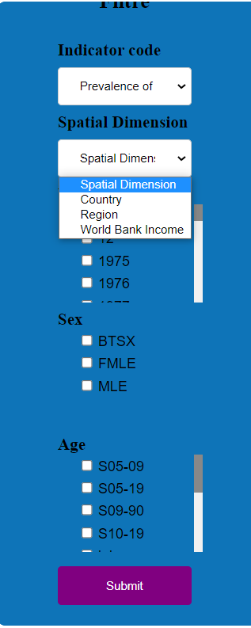
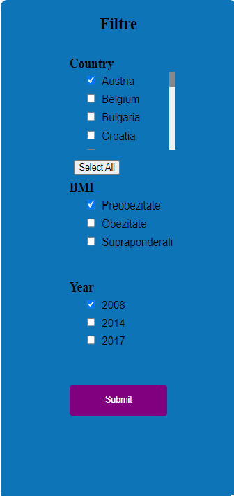
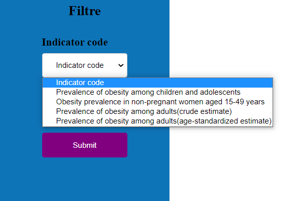
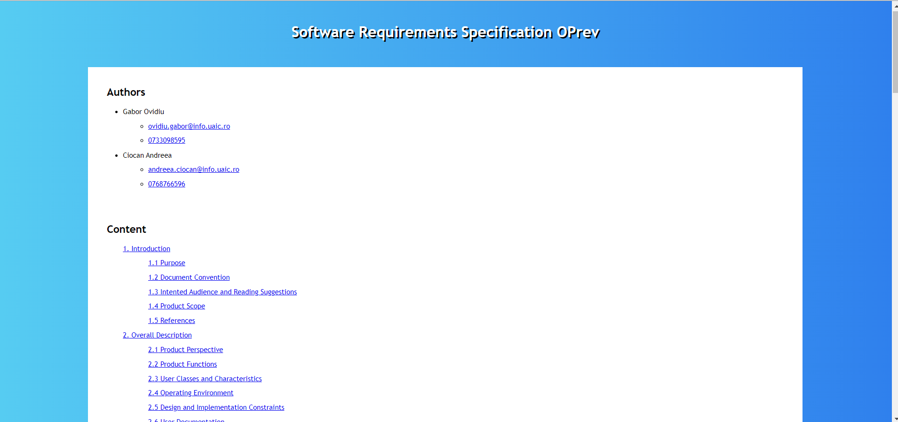
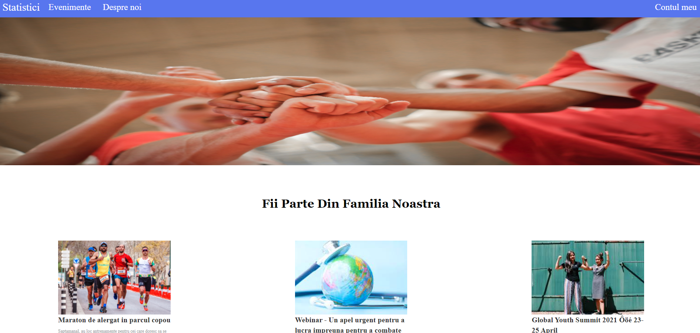
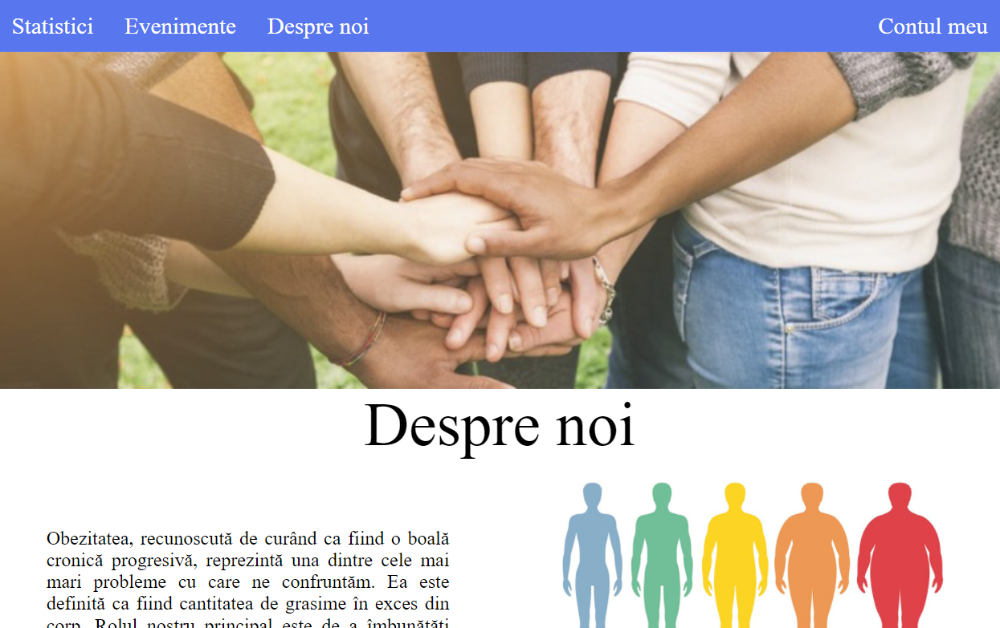
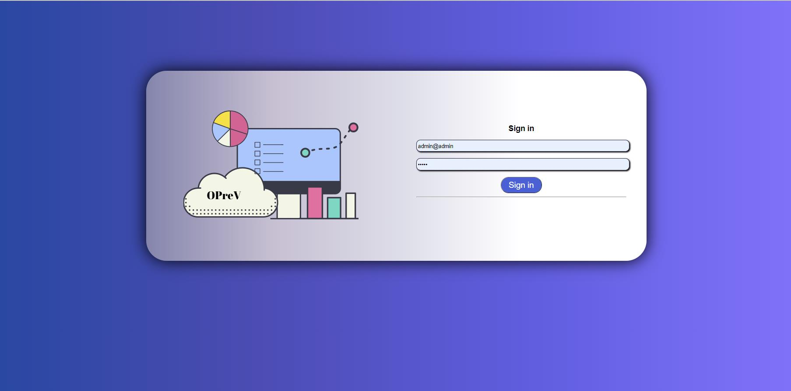
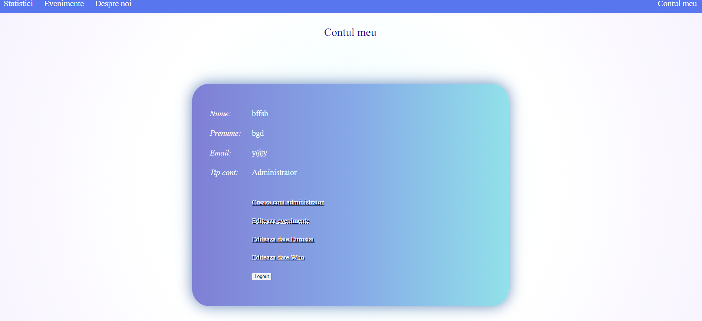

Aceasta este pagina principală a aplicației web, iar de aici pot fi accesate principalele
funcționalități prin apăsarea butoanelor: Evenimente (redirectare către pagina unde se regăsesc
acestea), Despre noi (pagină ce prezintă câteva date introductive legate de misiunea aplicației),
, Documentație (sunt definite conceptele, viziunea și detalii de implementare ale aplicației), iar
butonul din centrul paginii, Vizualizează, redirecționează către pagina în care se află statisticile
legate de obezitate.

Pe pagina de vizualizare a statisticilor există posibilitatea de a vizualiza date furnizare de WHO sau
de Eurostat, prin
apăsarea pictogramei corespunzătoare.
Diagramele generate pot fi descărcate în următoarele formate: CSV, PNG sau SVG, doar printr-un click pe
butonul corespunzător, ilustrat în imaginea de mai jos.

Atât în ceea ce privește statisticile ce folosesc date furnizate de WHO, cât și cele furnizate de
Eurostat,
acestea pot fi filtrate după diferite criterii ce pot fi selectate în meniul din dreapta ecanului.



Pe pagina de documentație sunt definite conceptele, viziunea și detalii de implementare ale aplicației.

Această pagină expune viitoare evenimente ce vor avea loc, ce țin de prevenirea obezității sau
diminuarea
efectelor acesteia.

Pe pagina sunt descrise elemente precum viziunea si misiunea aplicației.
Și de pe această pagină se poate naviga pe celelalte, descoperind și restul
aplicației web.

Autentificarea, respectiv înregistrarea sunt posibile pentru admin, astfel putând să gestioneze
datele ce se află în aplicația web. Acesta va putea să creeze alte conturi de administrator.

Pe această pagina, adminul va putea vedea detalii legate de contul său și va putea naviga către paginile
asupra cărora poate face modificări.
De asemenea, acesta poate edita datele statisticilor și ale evenimentelor, putând alege filtrele și datele corespunzătoare

Există mai multe pagini pe care admininul poate gestiona datele aflate pe site, de exemplu cea de editare a datelor furnizate de WHO, cea de editare a datelor de pe Eurostat și cea cu eventimente.
În fiecare din aceste pagini, adminul poate alege ce filtru dorește să editeze și ce acțiune vrea să efectueze: adăugare, editare sau ștergere.